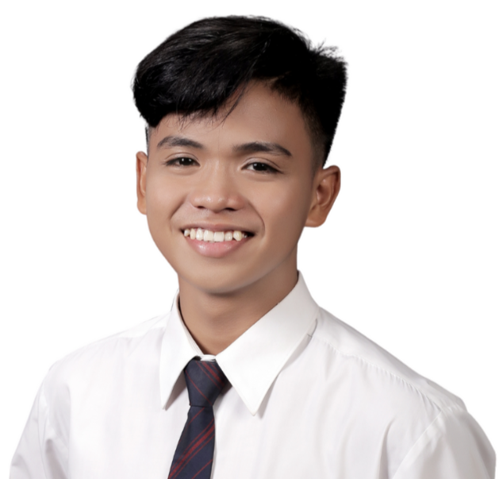

Ryan Ceasar C. Ramos
Poblacion 8, Cuenca Batangas
Email:
ramosryanceasar@gmail.com
LinkedIn:
www.linkedin.com/in/ryan-ceasar-ramos/
Objectives
I am a 4th-year IT student with basic knowledge in Database Management
(MySQL) and technical problem-solving. I aim to start an internship in
a dynamic work environment and leverage my soft skills to build strong
relationships with clients and team members.
Education
-
Batangas State University TNEU Lipa, Lipa City,
Batangas
BS Information Technology - Service Management (2021 -
Present)
-
Cuenca Senior High School, Cuenca, Batangas
Technical
and Vocational Livelihood (2019 - 2021)
-
Cuenca National High School, Cuenca, Batangas
Junior
High School (2015 - 2019)
Skills
-
Technical Skills: Basic knowledge of HTML, CSS,
JavaScript, MySQL, and PHP
-
Soft Skills: Attention to Detail, Problem-Solving,
Communication, Adaptability
Organization
Alliance of Informatics and Computing Sciences Students, Lipa City, Batangas
Committee on DRRM (Aug 2022 - Aug 2023)
Experiences
-
Data Entry Assistant, Cuenca, Batangas (Aug 13,
2024 - Sep 19, 2024)
Accurately inputting and updating data
into databases, spreadsheets, or software systems.
-
Gym Receptionist, Axyz Backyard, Cuenca (May 15,
2024 - Present)
Managing membership sign-ups, renewals, and
inquiries.
Certificates
-
unbUX: A Web Development and Design Workshop (Nov
25-26, 2022)
University of Science and Technology of Southern
Philippines, Cagayan De Oro City
-
Technolympics: The Great Hackathon (Apr 27,
2023)
Alliance of Informatics and Computing Sciences Students
(AICSS), Batangas State University TNEU Lipa
-
TechSynergy: Navigating the Digital Landscape (Dec
4, 2023)
Batangas State University TNEU Lipa